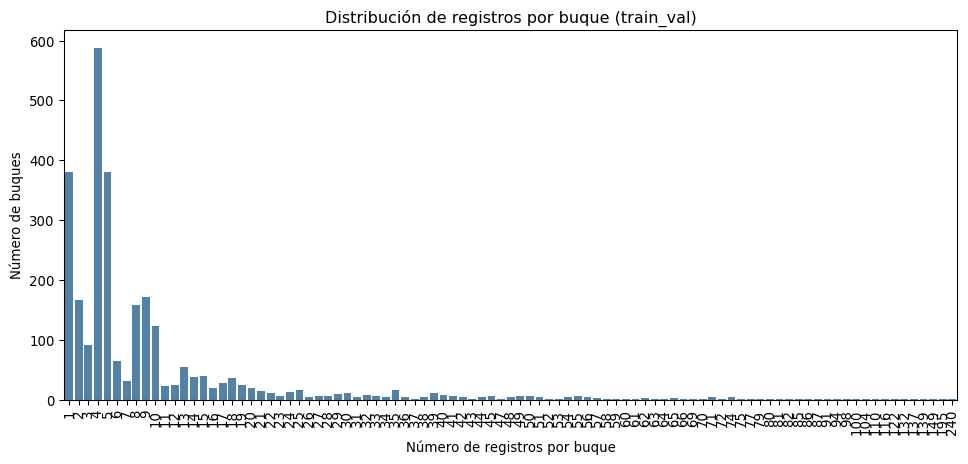
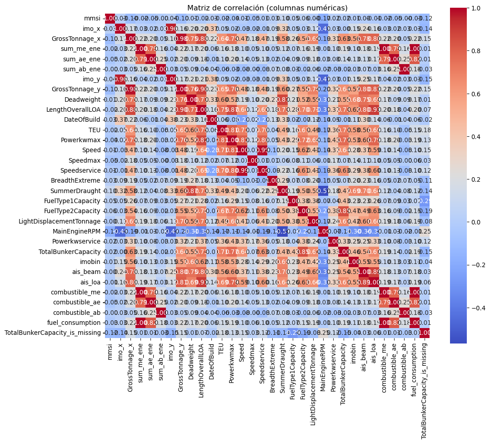
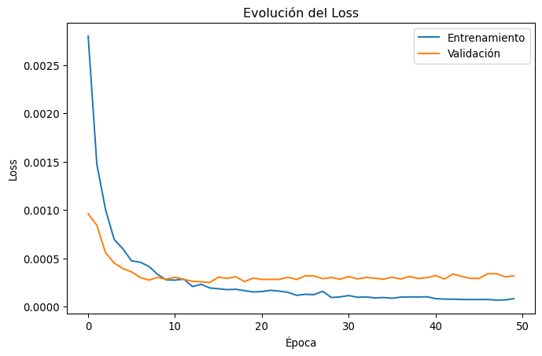
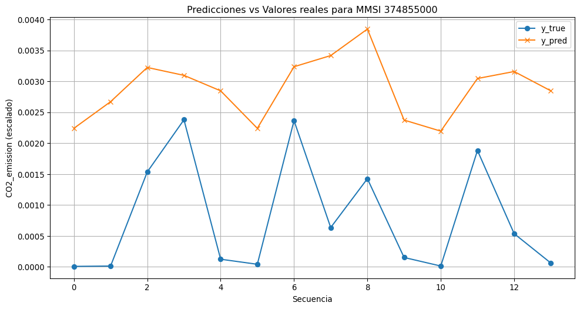

Tráfico marítimo en el Canal de Panamá, análisis técnico operacional-temporal con separación de prueba externa.
Autor/a
Brandon Martínez
Resumen
Este documento presenta un análisis de trayectorias marítimas a través del Canal de Panamá, incluyendo limpieza de datos, análisis exploratorio, análisis espacial H3 y modelado secuencial con LSTM para la predicción de emisiones de CO₂.
from tabulate import tabulateprint(f"Cantidad de filas en train_val: {len(train_val)}")print(f"Cantidad de columnas en train_val: {len(train_val.columns)}\n")
Cantidad de filas en train_val: 27532
Cantidad de columnas en train_val: 46
1.2 Exploración inicial de datos (sin h3_sequence)
Código
from tabulate import tabulate# Columnas a mostrar (excluyendo 'h3_sequence')cols_to_show = [c for c in train_val.columns if c !='h3_sequence']# Mostrar primeras filasprint(tabulate(train_val[cols_to_show].head(5), headers='keys', tablefmt='psql'))
La tabla muestra que la mayoría de los buques tienen pocos registros, la mayor parte entre 1 y 5 pasos. Solo unos pocos buques tienen muchos registros (más de 50), lo que indica que unos pocos son muy activos mientras la mayoría realiza trayectorias cortas o tiene menos datos registrados
Código
print("\nTabla de registros por buque ordenada por n_buques:")print(tabulate(tabla_freq_df, headers='keys', tablefmt='psql'))
1.4.1 Gráfico de distribución de registros por buque
Código
import matplotlib.pyplot as pltimport seaborn as snstabla_freq_df['n_buques_acum'] = tabla_freq_df['n_buques'].cumsum()plt.figure(figsize=(12,5))sns.barplot( data=tabla_freq_df, x='n_registros_por_buque', y='n_buques', color='steelblue')plt.xlabel("Número de registros por buque")plt.ylabel("Número de buques")plt.title("Distribución de registros por buque (train_val)")plt.xticks(rotation=90)plt.show()

1.5 Verificar viajes puerto–puerto
Código
viajes_incompletos = train_val[ train_val['port_before'].isna() | train_val['port_after'].isna() | (train_val['port_before'].str.lower().isin(['', 'desconocido'])) | (train_val['port_after'].str.lower().isin(['', 'desconocido']))]print("Cantidad de registros con viajes incompletos (puertos faltantes o desconocidos):", len(viajes_incompletos))print(tabulate( viajes_incompletos[['mmsi','port_before','port_after']].head(10), headers='keys', tablefmt='psql'))
Cantidad de registros con viajes incompletos (puertos faltantes o desconocidos): 0
+--------+---------------+--------------+
| mmsi | port_before | port_after |
|--------+---------------+--------------|
+--------+---------------+--------------+
“Todos los registros de viajes de puerto a puerto están completos; cada buque tiene correctamente registrado su puerto de salida y de llegada, sin información faltante ni desconocida.”
print("Valores nulos, cero y negativos en consumos:")print(tabulate(resumen_consumos, headers=["Columna","Nulos","Ceros","Negativos"], tablefmt="psql"))
Los consumos de energía son consistentes: ninguna columna tiene valores negativos, aunque sum_me_ene presenta 71 valores nulos y 13,973 registros con consumo cero, sum_ae_ene tiene 7,513 registros con consumo cero, y sum_ab_ene cuenta con 15,753 registros con consumo cero.
Código
print("\nResumen estadístico de consumos energéticos:")print(tabulate(train_val[cols_energia].describe().reset_index(), headers='keys', tablefmt='psql'))
Los consumos de energía varían mucho entre los registros. Muchos viajes registran cero consumo, mientras que unos pocos tienen consumos muy altos, lo que eleva el promedio. En general, la mayoría de los viajes usan poca energía, pero existen algunos casos con consumos significativamente mayores.
La duración de los tramos de viaje entre puertos varía mucho: van desde unas 44 horas hasta más de 2,000 horas, con la mayoría de los tramos entre 200 y 600 horas y un promedio de unas 430 horas
Código
print("Distribución de duración de viajes (horas):")print(tabulate(df_filtrado['duracion_viaje_horas'].describe().reset_index(), headers=['Métrica','Valor'], tablefmt='psql'))
La duración de los viajes varía ampliamente, desde unas 44 horas hasta más de 2,000 horas, con la mayoría de los viajes entre 200 y 600 horas y un promedio de aproximadamente 430 horas.
print("Frecuencia de duración de viajes (en días) ordenada de mayor a menor cantidad de viajes:")print(tabulate(tabla_frec, headers='keys', tablefmt='psql'))
La mayoría de los tramos de viaje entre puertos duran entre 5 y 7 días, siendo 6 días el más frecuente. Sin embargo, también hay viajes mucho más largos, algunos de hasta 86 días, lo que muestra que mientras la mayoría de los tramos son relativamente cortos, existen casos con duraciones significativamente mayores
tabla_frec_horas_top10 = tabla_frec_horas.head(10)print("Frecuencia de duración de viajes (horas) puerto->puerto ordenada de mayor a menor cantidad de viajes:")print(tabulate(tabla_frec_horas_top10, headers='keys', tablefmt='psql'))
Los datos muestran los tramos de viaje más frecuentes entre puertos y su duración en horas. Por ejemplo, los viajes dentro de Chiriquí Grande son los más repetidos, con varias duraciones registradas (alrededor de 325–570 horas). Otros tramos frecuentes incluyen rutas como Mariel → Puerto de Hencan o Santa Marta → Georgetown, con duraciones más largas, entre 800 y 1,500 horas. Esto indica que algunos trayectos son recorridos muy a menudo, mientras que otros, aunque menos frecuentes, implican viajes más largos.
tabla_frec_dias_top10 = tabla_frec_dias.head(10)print("Top 10 frecuencia de duración de viajes (días) puerto->puerto ordenada de mayor a menor cantidad de viajes:")print(tabulate(tabla_frec_dias_top10, headers='keys', tablefmt='psql'))
Los datos muestran los trayectos puerto a puerto más frecuentes y su duración en días. Por ejemplo, el viaje Manzanillo → Kingston es el más común, con 206 registros y una duración de 10 días. Otros trayectos frecuentes incluyen Puerto San Antonio → Freeport (11 días) y Andrés LNG Terminal ↔︎ Buenaventura (5–6 días). Esto refleja que algunos recorridos son muy habituales, mientras que otros, aunque menos frecuentes, pueden durar hasta varias semanas.
El análisis muestra qué barcos realizaron el trayecto Manzanillo → Kingston en exactamente 10 días. Por ejemplo, algunos barcos completaron el viaje varias veces, con registros que van de 11 a 30 tramos por barco. Esto indica que hay rutas muy recurrentes y que ciertos buques realizan este viaje de manera repetida dentro del periodo analizado.
El análisis muestra cuántos buques tienen distintos niveles de registros en los datos. Todos los buques (2,754) aparecen al menos una vez, pero conforme pedimos más registros por buque, el número disminuye: alrededor de la mitad tiene 5 o más registros, un cuarto tiene 10 o más, y solo un pequeño grupo (11 %) tiene 20 o más registros. Esto indica que mientras muchos buques aparecen pocas veces, algunos cuentan con series de datos más largas y consistentes.
Código
longitudes = [5, 6, 12, 15]registros_por_buque = train_val.groupby("mmsi").size()for n in longitudes: n_buques = (registros_por_buque >= n).sum()print(f"Buques con al menos {n} registros: {n_buques}")
Buques con al menos 5 registros: 1527
Buques con al menos 6 registros: 1147
Buques con al menos 12 registros: 575
Buques con al menos 15 registros: 458
# Filtrar registros con CO2_emission = 0df_ceros = train_val_filtrado[train_val_filtrado[target] ==0].copy()# Cuántos MMSI distintos tienen registros con cerommsi_ceros = df_ceros['mmsi'].nunique()print(f"Número de buques (mmsi) con al menos un CO2_emission = 0: {mmsi_ceros}")# Contar registros con cero por buqueregistros_ceros_por_mmsi = df_ceros.groupby('mmsi').size().reset_index(name='registros_cero')print("\nRegistros con CO2_emission = 0 por buque (top 10):")print(registros_ceros_por_mmsi.sort_values('registros_cero', ascending=False).head(10))
Número de buques (mmsi) con al menos un CO2_emission = 0: 797
Registros con CO2_emission = 0 por buque (top 10):
mmsi registros_cero
317 370120000 209
638 563587000 125
620 563058900 88
746 636017164 75
325 370837000 71
21 212917000 66
483 477711300 63
10 210159000 61
619 563056800 60
669 566278000 58
# Total de buques únicostotal_mmsi = train_val_filtrado['mmsi'].nunique()# Buques con al menos un cerommsi_con_ceros = train_val_filtrado.loc[train_val_filtrado['CO2_emission'] ==0, 'mmsi'].nunique()# Buques sin cerosmmsi_sin_ceros = total_mmsi - mmsi_con_ceros# Armar tabla resumenresumen_mmsi = pd.DataFrame({"grupo": ["Con ceros", "Sin ceros"],"count_mmsi": [mmsi_con_ceros, mmsi_sin_ceros],"porcentaje": [mmsi_con_ceros/total_mmsi*100, mmsi_sin_ceros/total_mmsi*100]})print(f"Total buques únicos (mmsi): {total_mmsi}\n")print(resumen_mmsi.to_string(index=False, formatters={"porcentaje": "{:.2f}%".format}))
Total buques únicos (mmsi): 2754
grupo count_mmsi porcentaje
Con ceros 797 28.94%
Sin ceros 1957 71.06%
casi 3 de cada 10 buques pasan por situaciones de “cero emisiones” (posible parada, fondeo, error o falta de consumo registrado).
1.10.2Eliminar registros con cero
Código
# Eliminar filas donde CO2_emission es cerotrain_val_filtrado = train_val_filtrado[train_val_filtrado[target] !=0].copy()print(f"Filas después de eliminar ceros en CO2_emission: {len(train_val_filtrado)}")
Filas después de eliminar ceros en CO2_emission: 20032
1.11 Limpieza de NaN en target y verificación de secuencias mínimas
Código
# Filtrar filas donde CO2_emission es NaNtrain_val_target = train_val_filtrado[train_val_filtrado[target].notna()].copy()seq_len =4# longitud mínima de secuencia# Contar buques válidos antes y después de eliminar NaNregistros_por_buque_orig = train_val_filtrado.groupby('mmsi').size()buques_validos_orig = (registros_por_buque_orig >= seq_len).sum()registros_por_buque_filtrado = train_val_target.groupby('mmsi').size()buques_validos_filtrado = (registros_por_buque_filtrado >= seq_len).sum()resumen = pd.DataFrame({'Dataset': ['Original', 'Filtrado por target'],'Buques válidos': [buques_validos_orig, buques_validos_filtrado],'Filas totales': [len(train_val_filtrado), len(train_val_target)]})print(tabulate(resumen, headers='keys', tablefmt='psql'))
Al filtrar los valores faltantes, quedarán 19,961 registros y 2,074 buques válidos. Esto significará que se habrán eliminado 71 registros individuales y 12 buques completos que ya no tendrán suficientes datos para formar secuencias mínimas.
1.12 Recorte de buques que no cumplen la longitud mínima
Código
# Función para filtrar buques por cantidad mínima de registrosdef filtrar_buques_por_min_registros(df, min_registros=4): registros_por_buque = df.groupby("mmsi").size() buques_validos = registros_por_buque[registros_por_buque >= min_registros].indexreturn df[df['mmsi'].isin(buques_validos)].copy()
Código
train_val_filtrado = filtrar_buques_por_min_registros(train_val_target, min_registros=seq_len)print(f"Filas después del recorte por secuencia mínima: {len(train_val_filtrado)}")
Filas después del recorte por secuencia mínima: 19140
Después de aplicar los filtros sobre el conjunto de datos, se eliminarán los registros con valores nulos en la variable objetivo CO2_emission y aquellos donde esta sea igual a cero. Tras estas operaciones, el dataset train_val_filtrado contendrá 19,140 filas, correspondientes a los buques que cumplen con los criterios mínimos de secuencia. Esto permitirá que los análisis y modelos posteriores se enfoquen únicamente en datos válidos y consistentes.
1.14 Partición interna
Código
from sklearn.model_selection import train_test_split# Definir X (features) y y (target)X = train_val_filtrado.drop(columns=[target])y = train_val_filtrado[target]# Partición interna: entrenamiento interno y validación internaX_train_int, X_val_int, y_train_int, y_val_int = train_test_split( X, y, test_size=0.2, # 20% para validación interna random_state=42, # para reproducibilidad shuffle=True)print(f"Tamaño X_train_int: {X_train_int.shape}")print(f"Tamaño X_val_int: {X_val_int.shape}")print(f"Tamaño y_train_int: {y_train_int.shape}")print(f"Tamaño y_val_int: {y_val_int.shape}")
def imputar_datos(df, columnas_numericas, columnas_categoricas, flags_nulos=None, medianas=None, modas=None):""" Imputa valores faltantes en un DataFrame. Args: df (pd.DataFrame): DataFrame a imputar. columnas_numericas (list): Columnas numéricas a imputar con mediana. columnas_categoricas (list): Columnas categóricas a imputar con moda. flags_nulos (list, optional): Columnas para crear flag de valores nulos originales. medianas (dict, optional): Median values para usar (train stats). modas (dict, optional): Moda values para usar (train stats). Returns: df_imputado (pd.DataFrame): DataFrame imputado. medianas (dict): Median values calculadas si no se pasan. modas (dict): Moda values calculadas si no se pasan. """ df_imputado = df.copy()# Crear flags de nulosif flags_nulos:for col in flags_nulos: df_imputado[f"{col}_is_missing"] = df_imputado[col].isna().astype(int)# Si no vienen medianas y modas, calcular a partir del df actualif medianas isNone: medianas = {col: df_imputado[col].median() for col in columnas_numericas}if modas isNone: modas = {col: df_imputado[col].mode()[0] for col in columnas_categoricas}# Imputar columnas numéricasfor col in columnas_numericas: df_imputado[col] = df_imputado[col].fillna(medianas[col])# Imputar columnas categóricasfor col in columnas_categoricas: df_imputado[col] = df_imputado[col].fillna(modas[col])return df_imputado, medianas, modas
1.14.2 Aplicación en training (entrenamiento interno)
Código
columnas_num = ['TotalBunkerCapacity', 'MainEngineRPM', 'FuelType1Capacity', 'ais_loa']flags = ['TotalBunkerCapacity'] # opcional si quieres marcar dónde estaban los nuloscolumnas_cat = [] # No hay columnas categóricas con nulos
def crear_features(df):""" Crea nuevas variables/features a partir de un DataFrame imputado. Variables creadas: - duration_min: duración entre posiciones consecutivas por buque - viaje_puerto: identificador de viaje basado en cambio de puerto - viaje_gap: identificador de viaje basado en gaps de tiempo - viaje_leg: identificador de viaje basado en start_leg y end_leg - frecuencia_puerto: número de veces que un puerto aparece como port_after por buque Args: df (pd.DataFrame): DataFrame imputado con columnas necesarias (fechas, puertos, leg info) Returns: pd.DataFrame: DataFrame con las nuevas features """ df = df.copy()# Ordenar por buque y tiempo df = df.sort_values(by=['mmsi','first_dt_pos_utc']).reset_index(drop=True)# duration_min df['duration_min'] = df.groupby('mmsi')['first_dt_pos_utc'].diff().dt.total_seconds() /60 df['duration_min'] = df['duration_min'].fillna(0)# viaje_puerto df['viaje_change_puerto'] = ( (df['port_before'] != df.groupby('mmsi')['port_before'].shift(1)) | (df['port_after'] != df.groupby('mmsi')['port_after'].shift(1)) ) df['viaje_puerto'] = df.groupby('mmsi')['viaje_change_puerto'].cumsum() df.drop(columns=['viaje_change_puerto'], inplace=True)# viaje_gap umbral_gap =60 df['viaje_change_gap'] = (df['duration_min'] > umbral_gap).astype(int) df['viaje_gap'] = df.groupby('mmsi')['viaje_change_gap'].cumsum() df.drop(columns=['viaje_change_gap'], inplace=True)# viaje_leg df['viaje_leg'] = ((df['start_leg'] != df.groupby('mmsi')['start_leg'].shift(1)) | (df['end_leg'] != df.groupby('mmsi')['end_leg'].shift(1))).cumsum()# frecuencia_puerto freq_puerto = df.groupby(['mmsi','port_after']).size().rename('frecuencia_puerto') df = df.merge(freq_puerto, how='left', on=['mmsi','port_after'])return df
from tabulate import tabulate# DataFrame de ejemplo: X_train_int_imputadodf = X_train_int_imputado.copy()# Crear lista de variables y su tipovariable_tipo = [(col, str(df[col].dtype)) for col in df.columns]# Mostrar en formato tabulateprint(tabulate(variable_tipo, headers=['Variable', 'Tipo'], tablefmt='grid'))
1.16 Visualización de matriz de correlación (heatmap)
Código
import pandas as pdimport seaborn as snsimport matplotlib.pyplot as pltdef mostrar_matriz_correlacion(df, figsize=(12,10), cmap='coolwarm'):""" Genera un heatmap de la matriz de correlación solo para columnas numéricas. Args: df (pd.DataFrame): DataFrame a analizar. figsize (tuple, optional): Tamaño de la figura. Default (12,10). cmap (str, optional): Colormap de Seaborn. Default 'coolwarm'. Retorna: corr (pd.DataFrame): Matriz de correlación (solo numéricas) para uso posterior. """ df_numerico = df.select_dtypes(include='number') corr = df_numerico.corr() plt.figure(figsize=figsize) sns.heatmap(corr, annot=True, fmt=".2f", cmap=cmap, cbar=True, square=True) plt.title("Matriz de correlación (columnas numéricas)") plt.show()return corr
Código
# Instancia: aplicar a X_train_int_imputadocorr_train = mostrar_matriz_correlacion(X_train_int_imputado)

1.16.1Definición de la función para eliminar correlación alta
Código
import numpy as np# Función para elegir variables altamente correlacionadasdef choose_one_from_highly_correlated(correlation_matrix, threshold=0.60):""" Identifica columnas a eliminar según correlación alta. Args: correlation_matrix (pd.DataFrame): matriz de correlación absoluta. threshold (float): umbral de correlación para eliminar variables. Returns: list: columnas a eliminar. """ columns_to_remove =set()for column in correlation_matrix.columns: high_corr_columns = correlation_matrix[column][correlation_matrix[column] > threshold].index.tolist()if column in high_corr_columns: high_corr_columns.remove(column)if high_corr_columns: columns_to_remove.update(high_corr_columns[1:])returnlist(columns_to_remove)
1.16.2Aplicación de la función a entrenamiento y validación
Código
import numpy as np# Calcular matriz de correlación absoluta solo de columnas numéricascorrelation_matrix_train = X_train_int_imputado.select_dtypes(include=[np.number]).corr().abs()# Identificar columnas a eliminar según correlacióncolumns_to_drop = choose_one_from_highly_correlated(correlation_matrix_train, threshold=0.60)# Eliminar columnas de X_train_int y X_val_intX_train_int_sin_corr = X_train_int_imputado.drop(columns=columns_to_drop)X_val_int_sin_corr = X_val_int_imputado.drop(columns=columns_to_drop)# Resumenprint(f"Columnas originales en train: {X_train_int_imputado.shape[1]}")print(f"Columnas eliminadas por alta correlación: {len(columns_to_drop)}")print(f"Columnas después de eliminación en train: {X_train_int_sin_corr.shape[1]}")
Columnas originales en train: 51
Columnas eliminadas por alta correlación: 18
Columnas después de eliminación en train: 33
2 Aplicar la eliminación de columnas seleccionadas a train y validación
Código
# eliminar de train y validación usando la lista calculadaX_train_int_imputado = X_train_int_imputado.drop(columns=columns_to_drop)X_val_int_imputado = X_val_int_imputado.drop(columns=columns_to_drop)
2.1 variables resultante
Código
from tabulate import tabulate# Crear lista de columnas y su tipovariable_tipo = [(col, str(X_train_int_imputado[col].dtype)) for col in X_train_int_imputado.columns]# Mostrar en formato tablaprint(tabulate(variable_tipo, headers=['Variable', 'Tipo'], tablefmt='grid'))
# Convertir todas las columnas categóricas a string (por si hay tipos mixtos)X_train_scaled[categorical_features] = X_train_scaled[categorical_features].astype(str)X_val_scaled[categorical_features] = X_val_scaled[categorical_features].astype(str)print("Columnas categóricas convertidas a string ✅")
Columnas categóricas convertidas a string ✅
Código
from sklearn.preprocessing import OneHotEncoderfrom sklearn.compose import ColumnTransformer# Codificación one-hotencoder = ColumnTransformer( transformers=[('cat', OneHotEncoder(handle_unknown='ignore'), categorical_features)], remainder='drop'# solo se procesan las columnas categóricas que definimos)X_train_enc = encoder.fit_transform(X_train_scaled)X_val_enc = encoder.transform(X_val_scaled)print("Codificación One-Hot realizada ✅")
Codificación One-Hot realizada ✅
Código
# Convertimos a DataFrame para inspecciónimport pandas as pdX_train_df = pd.DataFrame(X_train_enc.toarray() ifhasattr(X_train_enc, "toarray") else X_train_enc)X_val_df = pd.DataFrame(X_val_enc.toarray() ifhasattr(X_val_enc, "toarray") else X_val_enc)print("Conversión a DataFrame realizada ✅")print("Dimensiones X_train_df:", X_train_df.shape)print("Dimensiones X_val_df:", X_val_df.shape)
print("NaN en y_train_int:", y_train_int.isna().sum())print("NaN en y_val_int:", y_val_int.isna().sum())print("Valores únicos en y_train_int:", y_train_int.unique())
NaN en y_train_int: 0
NaN en y_val_int: 0
Valores únicos en y_train_int: [2.47487183e+03 2.08071100e+01 7.57015043e+02 ... 1.39331007e+03
1.60673185e+04 3.65883159e+04]
2.5Escalado de la variable objetivo
Código
from sklearn.preprocessing import MinMaxScalerimport numpy as npscaler_y = MinMaxScaler()y_train_scaled = scaler_y.fit_transform(y_train_int.values.reshape(-1,1))y_val_scaled = scaler_y.transform(y_val_int.values.reshape(-1,1))
2.6 inspeccionar_target
Código
import numpy as npprint("NaN en y_train_scaled:", np.isnan(y_train_scaled).sum())print("Inf en y_train_scaled:", np.isinf(y_train_scaled).sum())print("NaN en y_val_scaled:", np.isnan(y_val_scaled).sum())print("Inf en y_val_scaled:", np.isinf(y_val_scaled).sum())print("Valores mínimos y máximos en y_train_scaled:", y_train_scaled.min(), y_train_scaled.max())print("Valores mínimos y máximos en y_val_scaled:", y_val_scaled.min(), y_val_scaled.max())
NaN en y_train_scaled: 0
Inf en y_train_scaled: 0
NaN en y_val_scaled: 0
Inf en y_val_scaled: 0
Valores mínimos y máximos en y_train_scaled: 0.0 1.0000000000000002
Valores mínimos y máximos en y_val_scaled: -5.700627960199813e-09 1.2468833255578058
2.7Crear secuencias para LSTM (con índices originales)
Código
seq_len =3def create_sequences(X, y, df_indices, seq_len=3): X_seq, y_seq, idx_seq_all = [], [], []for _, group in df_indices.groupby('mmsi'): n =len(group)if n <= seq_len:continuefor i inrange(n - seq_len): idx_seq = group.index[i:i+seq_len].to_list() X_seq.append(X[idx_seq]) y_seq.append(y[idx_seq[-1]])# Guardamos el índice real del último valor de la secuencia idx_seq_all.append(group.loc[idx_seq[-1], "index_original"])return np.array(X_seq), np.array(y_seq), np.array(idx_seq_all)# Guardar índice originalX_train_scaled_reset = X_train_scaled.reset_index(drop=True)X_train_scaled_reset['index_original'] = X_train_scaled_reset.indexX_val_scaled_reset = X_val_scaled.reset_index(drop=True)X_val_scaled_reset['index_original'] = X_val_scaled_reset.index# Crear secuenciasX_train_seq, y_train_seq, idx_train_seq = create_sequences( X_train_df.values, y_train_scaled, X_train_scaled_reset, seq_len)X_val_seq, y_val_seq, idx_val_seq = create_sequences( X_val_df.values, y_val_scaled, X_val_scaled_reset, seq_len)
from sklearn.metrics import r2_scoreimport numpy as np# Evaluación del modelo en validaciónloss, mae = model.evaluate(X_val_seq, y_val_seq, verbose=0)# Prediccionesy_pred_scaled = model.predict(X_val_seq, verbose=0)y_pred = scaler_y.inverse_transform(y_pred_scaled.reshape(-1, 1))y_true = scaler_y.inverse_transform(y_val_seq.reshape(-1, 1))# Métricasmae_original = np.mean(np.abs(y_true - y_pred))r2 = r2_score(y_true, y_pred)epsilon =1e-8mape = np.mean(np.abs((y_true - y_pred) / (y_true + epsilon))) *100# Prints resumidos y clarosprint(f"R²: {r2:.4f}")print(f"MAPE: {mape:.2f}%")print(f"Loss (scaled): {loss:.4f}")print(f"MAE (scaled): {mae:.4f}")print(f"MAE original: {mae_original:.2f}")
R²: 0.7696
MAPE: 63968.24%
Loss (scaled): 0.0003
MAE (scaled): 0.0057
MAE original: 150875.57
Código
import matplotlib.pyplot as plt# Supongamos que tu entrenamiento devuelve un objeto 'history'# history.history['loss'] contiene el loss por épocaloss = history.history['loss'] val_loss = history.history.get('val_loss') # opcional, si tienes validaciónplt.figure(figsize=(8,5))plt.plot(loss, label='Entrenamiento')if val_loss: plt.plot(val_loss, label='Validación')plt.title('Evolución del Loss')plt.xlabel('Época')plt.ylabel('Loss')plt.legend()plt.show()

2.10 conjunto de prueba
2.11 Crear target CO2_emission en test
Código
# Crear target en test_exttest_ext = crear_target_emisiones(test_ext)target ='CO2_emission'
test_ext_filtrado = filtrar_buques_por_min_registros(test_ext_target, min_registros=seq_len)print(f"Filas después del recorte por secuencia mínima en test: {len(test_ext_filtrado)}")
Filas después del recorte por secuencia mínima en test: 1631
# Columnas a imputar en testcolumnas_num = ['TotalBunkerCapacity', 'MainEngineRPM', 'FuelType1Capacity']flags = ['TotalBunkerCapacity'] # opcional: marcar dónde había nuloscolumnas_cat = [] # no hay categóricas con nulos# Aplicar imputación al test usando stats del trainX_test_imputado, _, _ = imputar_datos( X_test, columnas_numericas=columnas_num, columnas_categoricas=columnas_cat, flags_nulos=flags, medianas=medianas, # de X_train_int_imputado modas=modas)
2.17 features
Código
X_test_features = crear_features(X_test_imputado)
2.18 ajustes de correlaciones
Código
X_test_sin_corr = X_test_imputado.drop(columns=columns_to_drop)print(f"Columnas en test antes de eliminar correladas: {X_test_imputado.shape[1]}")print(f"Columnas en test después de eliminar correladas: {X_test_sin_corr.shape[1]}")
Columnas en test antes de eliminar correladas: 51
Columnas en test después de eliminar correladas: 33
Código
from tabulate import tabulate# Resumen de columnas finales del testresumen_test_final = pd.DataFrame({"Columnas finales": X_test_sin_corr.columns,"Tipo": X_test_sin_corr.dtypes.values})print(tabulate(resumen_test_final, headers="keys", tablefmt="psql"))
# Obtener predicciones en el testy_test_pred = model.predict(X_test_seq)# Reconstrucción con índices originalesdf_results_test = pd.DataFrame({"index_original": idx_test_seq,"y_true": y_test_seq.flatten(),"y_pred": y_test_pred.flatten()})# Ver las primeras filasdf_results_test.head()
# Extraer mmsi para cada prediccióndf_results_test['mmsi'] = X_test_scaled_reset.loc[df_results_test['index_original'], 'mmsi'].values# Elegir un MMSI aleatorio del conjunto de pruebaimport numpy as npmmsi_random = np.random.choice(df_results_test['mmsi'].unique())# Filtrar predicciones de ese buquedf_buque = df_results_test[df_results_test['mmsi'] == mmsi_random]print(df_buque)
import matplotlib.pyplot as plt# Contar cuántos registros tiene cada MMSIconteo_buques = df_results_test['mmsi'].value_counts()# Elegir un MMSI con al menos, por ejemplo, 5 secuenciasmmsi_ejemplo = conteo_buques[conteo_buques >=5].index[0]# Filtrar predicciones de ese buquedf_buque = df_results_test[df_results_test['mmsi'] == mmsi_ejemplo]# Graficarplt.figure(figsize=(12,6))plt.plot(df_buque['y_true'].values, label='y_true', marker='o')plt.plot(df_buque['y_pred'].values, label='y_pred', marker='x')plt.title(f'Predicciones vs Valores reales para MMSI {mmsi_ejemplo}')plt.xlabel('Secuencia')plt.ylabel('CO2_emission (escalado)')plt.legend()plt.grid(True)plt.show()

Ejecutar el código
# Green Maritime Corridors - Canal de Panamáquarto preview## Librerías y dependencias```{python}#| label: librerias#| warning: false#| message: falseimport pandas as pdimport numpy as npfrom sklearn.pipeline import Pipelinefrom sklearn.preprocessing import StandardScaler, OneHotEncoderfrom sklearn.compose import ColumnTransformerfrom sklearn.impute import SimpleImputerfrom sklearn.base import BaseEstimator, TransformerMixinfrom sklearn.feature_selection import SelectKBest, f_regression```## Lectura y limpieza inicial```{python}#| label: lectura_limpieza_inicial# Lectura y limpieza inicialruta_data =r"C:\Users\limco\Documents\DATA_C\sample_training.parquet"df_raw = pd.read_parquet(ruta_data, engine='fastparquet')# Limpiar nombres de columnasdf_raw.columns = ( df_raw.columns.str.strip() .str.replace(' ', '_') .str.replace(r'[^\w]', '', regex=True))# Convertir columna de fechadf_raw['first_dt_pos_utc'] = pd.to_datetime(df_raw['first_dt_pos_utc'])```## Partición externa```{python}#| label: particion_externa# Partición externafecha_corte = pd.to_datetime('2019-06-01')train_val = df_raw[df_raw['first_dt_pos_utc'] < fecha_corte].copy()test_ext = df_raw[df_raw['first_dt_pos_utc'] >= fecha_corte].copy()```# Exploración inicial (EDA)## Resumen de train\_val```{python}#| label: resumen_train_val#| warning: false#| message: falsefrom tabulate import tabulateprint(f"Cantidad de filas en train_val: {len(train_val)}")print(f"Cantidad de columnas en train_val: {len(train_val.columns)}\n")```## Exploración inicial de datos (sin h3\_sequence)```{python}#| label: exploracion_i#| warning: false#| message: falsefrom tabulate import tabulate# Columnas a mostrar (excluyendo 'h3_sequence')cols_to_show = [c for c in train_val.columns if c !='h3_sequence']# Mostrar primeras filasprint(tabulate(train_val[cols_to_show].head(5), headers='keys', tablefmt='psql'))```## Revisión de tipos de datos```{python}#| label: tipos_columnas#| warning: false#| message: falsefrom tabulate import tabulatetipos = train_val.dtypes.reset_index()tipos.columns = ['Columna', 'Tipo de dato']print(tabulate(tipos, headers='keys', tablefmt='psql'))```## Distribución de registros por buque```{python}#| label: eda_secuencias#| warning: false#| message: falsefrom tabulate import tabulateregistros_por_buque = train_val.groupby("mmsi").size()tabla_freq = registros_por_buque.value_counts().sort_index()tabla_freq_df = tabla_freq.reset_index()tabla_freq_df.columns = ["n_registros_por_buque", "n_buques"]tabla_freq_df = tabla_freq_df.sort_values(by="n_buques", ascending=False).reset_index(drop=True)```La tabla muestra que la mayoría de los buques tienen pocos registros, la mayor parte entre 1 y 5 pasos. Solo unos pocos buques tienen muchos registros (más de 50), lo que indica que unos pocos son muy activos mientras la mayoría realiza trayectorias cortas o tiene menos datos registrados```{python}#| label: a_secuencias#| warning: false#| message: falseprint("\nTabla de registros por buque ordenada por n_buques:")print(tabulate(tabla_freq_df, headers='keys', tablefmt='psql'))```### Gráfico de distribución de registros por buque```{python}#| label: eda_grafico#| warning: false#| message: falseimport matplotlib.pyplot as pltimport seaborn as snstabla_freq_df['n_buques_acum'] = tabla_freq_df['n_buques'].cumsum()plt.figure(figsize=(12,5))sns.barplot( data=tabla_freq_df, x='n_registros_por_buque', y='n_buques', color='steelblue')plt.xlabel("Número de registros por buque")plt.ylabel("Número de buques")plt.title("Distribución de registros por buque (train_val)")plt.xticks(rotation=90)plt.show()```## Verificar viajes puerto–puerto```{python}#| label: eda_viajes_puerto#| warning: false#| message: falseviajes_incompletos = train_val[ train_val['port_before'].isna() | train_val['port_after'].isna() | (train_val['port_before'].str.lower().isin(['', 'desconocido'])) | (train_val['port_after'].str.lower().isin(['', 'desconocido']))]print("Cantidad de registros con viajes incompletos (puertos faltantes o desconocidos):", len(viajes_incompletos))print(tabulate( viajes_incompletos[['mmsi','port_before','port_after']].head(10), headers='keys', tablefmt='psql'))```**“Todos los registros de viajes de puerto a puerto están completos; cada buque tiene correctamente registrado su puerto de salida y de llegada, sin información faltante ni desconocida.”**## Revisar consumos de energía```{python}#| label: eda_consumos#| warning: false#| message: falsecols_energia = ['sum_me_ene','sum_ae_ene','sum_ab_ene']resumen_consumos = []for col in cols_energia: n_nulos = train_val[col].isna().sum() n_cero = (train_val[col] ==0).sum() n_neg = (train_val[col] <0).sum() resumen_consumos.append([col, n_nulos, n_cero, n_neg])``````{python}#| label: e_consumos#| warning: false#| message: falseprint("Valores nulos, cero y negativos en consumos:")print(tabulate(resumen_consumos, headers=["Columna","Nulos","Ceros","Negativos"], tablefmt="psql"))```Los consumos de energía son consistentes: ninguna columna tiene valores negativos, aunque `sum_me_ene` presenta 71 valores nulos y 13,973 registros con consumo cero, `sum_ae_ene` tiene 7,513 registros con consumo cero, y `sum_ab_ene` cuenta con 15,753 registros con consumo cero.---```{python}#| label: d_consumos#| warning: false#| message: falseprint("\nResumen estadístico de consumos energéticos:")print(tabulate(train_val[cols_energia].describe().reset_index(), headers='keys', tablefmt='psql'))```Los consumos de energía varían mucho entre los registros. Muchos viajes registran cero consumo, mientras que unos pocos tienen consumos muy altos, lo que eleva el promedio. En general, la mayoría de los viajes usan poca energía, pero existen algunos casos con consumos significativamente mayores.## Duración de viajes puerto–puerto```{python}#| label: eda_duracion_viajes#| warning: false#| message: falsemmsi_validos = train_val['mmsi'].value_counts()mmsi_validos = mmsi_validos[mmsi_validos >=12].indexdf_filtrado = train_val[train_val['mmsi'].isin(mmsi_validos)].copy()df_filtrado['duracion_viaje_horas'] = ( (df_filtrado['end_leg'] - df_filtrado['start_leg']).dt.total_seconds() /3600)```La duración de los tramos de viaje entre puertos varía mucho: van desde unas 44 horas hasta más de 2,000 horas, con la mayoría de los tramos entre 200 y 600 horas y un promedio de unas 430 horas```{python}#| label: duracion_horas#| warning: false#| message: falseprint("Distribución de duración de viajes (horas):")print(tabulate(df_filtrado['duracion_viaje_horas'].describe().reset_index(), headers=['Métrica','Valor'], tablefmt='psql'))```La duración de los viajes varía ampliamente, desde unas 44 horas hasta más de 2,000 horas, con la mayoría de los viajes entre 200 y 600 horas y un promedio de aproximadamente 430 horas.```{python}#| label: eda_frecuencia_duracion_dias#| warning: false#| message: falsedf_filtrado['duracion_viaje_dias'] = ( (df_filtrado['end_leg'] - df_filtrado['start_leg']).dt.total_seconds() / (3600*24)).astype(int)tabla_frec = df_filtrado['duracion_viaje_dias'].value_counts().reset_index()tabla_frec.columns = ['Duración (días)', 'Cantidad de viajes']tabla_frec = tabla_frec.sort_values('Cantidad de viajes', ascending=False)``````{python}#| label: duracion_dias#| warning: false#| message: falseprint("Frecuencia de duración de viajes (en días) ordenada de mayor a menor cantidad de viajes:")print(tabulate(tabla_frec, headers='keys', tablefmt='psql'))```La mayoría de los tramos de viaje entre puertos duran entre 5 y 7 días, siendo 6 días el más frecuente. Sin embargo, también hay viajes mucho más largos, algunos de hasta 86 días, lo que muestra que mientras la mayoría de los tramos son relativamente cortos, existen casos con duraciones significativamente mayores```{python}#| label: eda_duracion_horas#| warning: false#| message: falsedf_filtrado = df_filtrado[ df_filtrado['port_before'].notna() & df_filtrado['port_after'].notna() & (~df_filtrado['port_before'].str.lower().isin(['', 'desconocido'])) & (~df_filtrado['port_after'].str.lower().isin(['', 'desconocido']))].copy()df_filtrado['duracion_horas'] = ( (df_filtrado['end_leg'] - df_filtrado['start_leg']).dt.total_seconds() /3600)tabla_frec_horas = df_filtrado.groupby(['port_before','port_after','duracion_horas']).size().reset_index(name='cantidad_viajes')tabla_frec_horas = tabla_frec_horas.sort_values('cantidad_viajes', ascending=False)``````{python}#| label: on_horas#| warning: false#| message: falsetabla_frec_horas_top10 = tabla_frec_horas.head(10)print("Frecuencia de duración de viajes (horas) puerto->puerto ordenada de mayor a menor cantidad de viajes:")print(tabulate(tabla_frec_horas_top10, headers='keys', tablefmt='psql'))```Los datos muestran los **tramos de viaje más frecuentes entre puertos** y su duración en horas. Por ejemplo, los viajes dentro de **Chiriquí Grande** son los más repetidos, con varias duraciones registradas (alrededor de 325–570 horas). Otros tramos frecuentes incluyen rutas como **Mariel → Puerto de Hencan** o **Santa Marta → Georgetown**, con duraciones más largas, entre 800 y 1,500 horas. Esto indica que algunos trayectos son recorridos muy a menudo, mientras que otros, aunque menos frecuentes, implican viajes más largos.```{python}#| label: eda_duracion_dias#| warning: false#| message: falsedf_filtrado['duracion_dias'] = ((df_filtrado['end_leg'] - df_filtrado['start_leg']).dt.total_seconds() / (3600*24)).astype(int)tabla_frec_dias = df_filtrado.groupby(['port_before','port_after','duracion_dias']).size().reset_index(name='cantidad_viajes')tabla_frec_dias = tabla_frec_dias.sort_values('cantidad_viajes', ascending=False)``````{python}#| label: puerto#| warning: false#| message: falsetabla_frec_dias_top10 = tabla_frec_dias.head(10)print("Top 10 frecuencia de duración de viajes (días) puerto->puerto ordenada de mayor a menor cantidad de viajes:")print(tabulate(tabla_frec_dias_top10, headers='keys', tablefmt='psql'))```Los datos muestran los **trayectos puerto a puerto más frecuentes y su duración en días**. Por ejemplo, el viaje **Manzanillo → Kingston** es el más común, con 206 registros y una duración de 10 días. Otros trayectos frecuentes incluyen **Puerto San Antonio → Freeport** (11 días) y **Andrés LNG Terminal ↔ Buenaventura** (5–6 días). Esto refleja que algunos recorridos son muy habituales, mientras que otros, aunque menos frecuentes, pueden durar hasta varias semanas.## Análisis de viajes específicos puerto–puerto```{python}#| label: eda_inspeccionar#| warning: false#| message: falsepuerto_inicio ="MANZANILLO"puerto_fin ="KINGSTON"dias_viaje =10viajes_filtrados = df_filtrado[ (df_filtrado['port_before'] == puerto_inicio) & (df_filtrado['port_after'] == puerto_fin) & (((df_filtrado['end_leg'] - df_filtrado['start_leg']).dt.total_seconds() / (3600*24)).astype(int) == dias_viaje)]resumen_mmsi = viajes_filtrados.groupby('mmsi').size().reset_index(name='registros_viaje')print(f"Barcos que hicieron el viaje {puerto_inicio} -> {puerto_fin} en {dias_viaje} días:")print(tabulate(resumen_mmsi, headers='keys', tablefmt='psql'))```El análisis muestra qué barcos realizaron el trayecto **Manzanillo → Kingston en exactamente 10 días**. Por ejemplo, algunos barcos completaron el viaje varias veces, con registros que van de 11 a 30 tramos por barco. Esto indica que hay rutas muy recurrentes y que ciertos buques realizan este viaje de manera repetida dentro del periodo analizado.## Cuántos buques tienen secuencias```{python}#| label: n_buques#| warning: false#| message: falseregistros_por_buque = train_val.groupby("mmsi").size()longitudes = [1, 5, 10, 12, 15, 20]resumen_secuencias = []total_buques =len(registros_por_buque)for l in longitudes: n_buques = (registros_por_buque >= l).sum() porcentaje = n_buques / total_buques *100 resumen_secuencias.append([l, n_buques, porcentaje])resumen_df = pd.DataFrame(resumen_secuencias, columns=['Min Registros', 'N° Buques', 'Porcentaje (%)'])print(resumen_df)```El análisis muestra **cuántos buques tienen distintos niveles de registros en los datos**. Todos los buques (2,754) aparecen al menos una vez, pero conforme pedimos más registros por buque, el número disminuye: alrededor de la mitad tiene 5 o más registros, un cuarto tiene 10 o más, y solo un pequeño grupo (11 %) tiene 20 o más registros. Esto indica que mientras muchos buques aparecen pocas veces, algunos cuentan con series de datos más largas y consistentes.```{python}#| label: registros_por#| warning: false#| message: falselongitudes = [5, 6, 12, 15]registros_por_buque = train_val.groupby("mmsi").size()for n in longitudes: n_buques = (registros_por_buque >= n).sum()print(f"Buques con al menos {n} registros: {n_buques}")``````{python}#| label: registros_por_buque#| warning: false#| message: falselongitudes = [ 3,4, 5,6,7,8, 12]for n in longitudes: buques_validos = registros_por_buque[registros_por_buque >= n].index df_filtrado = train_val[train_val['mmsi'].isin(buques_validos)] n_filas =len(df_filtrado) n_buques =len(buques_validos)print(f"Secuencia {n}: {n_buques} buques, {n_filas} filas")```## Creación de la variable objetivo: CO2\_emission```{python}#| label: crear_target_emisiones#| warning: false#| message: falsedef crear_target_emisiones(df, sfoc_me=0.2, sfoc_ae=0.22, sfoc_ab=0.25, factor_emision=3.17): df = df.copy() df['combustible_me'] = df['sum_me_ene'] * sfoc_me df['combustible_ae'] = df['sum_ae_ene'] * sfoc_ae df['combustible_ab'] = df['sum_ab_ene'] * sfoc_ab df['fuel_consumption'] = df['combustible_me'] + df['combustible_ae'] + df['combustible_ab'] df['CO2_emission'] = df['fuel_consumption'] * factor_emisionreturn df``````{python}#| label: target_emisiones#| warning: false#| message: falsetrain_val_filtrado = crear_target_emisiones(train_val)target ='CO2_emission'```### **Bloque 1: Ver ceros en CO2\_emission**```{python}#| label: inspeccionar_ceros#| warning: false#| message: false# Contar ceros en la variable objetivoceros_target = (train_val_filtrado[target] ==0).sum()porc_ceros = ceros_target /len(train_val_filtrado) *100print(f"Registros con CO2_emission = 0: {ceros_target} ({porc_ceros:.2f}%)")# Inspeccionar algunos registros con ceroprint("\nPrimeros registros con CO2_emission = 0:")print(train_val_filtrado[train_val_filtrado[target] ==0].head())``````{python}#| label: mmsi_con_ceros#| warning: false#| message: false# Filtrar registros con CO2_emission = 0df_ceros = train_val_filtrado[train_val_filtrado[target] ==0].copy()# Cuántos MMSI distintos tienen registros con cerommsi_ceros = df_ceros['mmsi'].nunique()print(f"Número de buques (mmsi) con al menos un CO2_emission = 0: {mmsi_ceros}")# Contar registros con cero por buqueregistros_ceros_por_mmsi = df_ceros.groupby('mmsi').size().reset_index(name='registros_cero')print("\nRegistros con CO2_emission = 0 por buque (top 10):")print(registros_ceros_por_mmsi.sort_values('registros_cero', ascending=False).head(10))``````{python}#| label: mmsi_con_ceros_todos#| warning: false#| message: falseprint(registros_ceros_por_mmsi.sort_values('registros_cero', ascending=False))``````{python}#| label: resumen_mmsi_ceros#| warning: false#| message: false# Total de buques únicostotal_mmsi = train_val_filtrado['mmsi'].nunique()# Buques con al menos un cerommsi_con_ceros = train_val_filtrado.loc[train_val_filtrado['CO2_emission'] ==0, 'mmsi'].nunique()# Buques sin cerosmmsi_sin_ceros = total_mmsi - mmsi_con_ceros# Armar tabla resumenresumen_mmsi = pd.DataFrame({"grupo": ["Con ceros", "Sin ceros"],"count_mmsi": [mmsi_con_ceros, mmsi_sin_ceros],"porcentaje": [mmsi_con_ceros/total_mmsi*100, mmsi_sin_ceros/total_mmsi*100]})print(f"Total buques únicos (mmsi): {total_mmsi}\n")print(resumen_mmsi.to_string(index=False, formatters={"porcentaje": "{:.2f}%".format}))```casi 3 de cada 10 buques pasan por situaciones de “cero emisiones” (posible parada, fondeo, error o falta de consumo registrado).### **Eliminar registros con cero**```{python}#| label: eliminar_ceros#| warning: false#| message: false# Eliminar filas donde CO2_emission es cerotrain_val_filtrado = train_val_filtrado[train_val_filtrado[target] !=0].copy()print(f"Filas después de eliminar ceros en CO2_emission: {len(train_val_filtrado)}")```## Limpieza de NaN en target y verificación de secuencias mínimas```{python}#| label: limpieza_nan_target#| warning: false#| message: false# Filtrar filas donde CO2_emission es NaNtrain_val_target = train_val_filtrado[train_val_filtrado[target].notna()].copy()seq_len =4# longitud mínima de secuencia# Contar buques válidos antes y después de eliminar NaNregistros_por_buque_orig = train_val_filtrado.groupby('mmsi').size()buques_validos_orig = (registros_por_buque_orig >= seq_len).sum()registros_por_buque_filtrado = train_val_target.groupby('mmsi').size()buques_validos_filtrado = (registros_por_buque_filtrado >= seq_len).sum()resumen = pd.DataFrame({'Dataset': ['Original', 'Filtrado por target'],'Buques válidos': [buques_validos_orig, buques_validos_filtrado],'Filas totales': [len(train_val_filtrado), len(train_val_target)]})print(tabulate(resumen, headers='keys', tablefmt='psql'))```Al filtrar los valores faltantes, quedarán 19,961 registros y 2,074 buques válidos. Esto significará que se habrán eliminado 71 registros individuales y 12 buques completos que ya no tendrán suficientes datos para formar secuencias mínimas.## Recorte de buques que no cumplen la longitud mínima```{python}#| label: recorte_buques_min#| warning: false#| message: false# Función para filtrar buques por cantidad mínima de registrosdef filtrar_buques_por_min_registros(df, min_registros=4): registros_por_buque = df.groupby("mmsi").size() buques_validos = registros_por_buque[registros_por_buque >= min_registros].indexreturn df[df['mmsi'].isin(buques_validos)].copy()``````{python}#| label: recorte_buques#| warning: false#| message: falsetrain_val_filtrado = filtrar_buques_por_min_registros(train_val_target, min_registros=seq_len)print(f"Filas después del recorte por secuencia mínima: {len(train_val_filtrado)}")```## valores nulos```{python}#| label: valores_nulos#| warning: false#| message: falsenulos_por_col = train_val_filtrado.isnull().sum()nulos_filtrados = nulos_por_col[nulos_por_col >0]resumen_nulos = pd.DataFrame({'Columna': nulos_filtrados.index,'Valores nulos': nulos_filtrados.values,'Porcentaje nulos (%)': nulos_filtrados /len(train_val_filtrado) *100}).sort_values(by='Porcentaje nulos (%)', ascending=False)print(tabulate(resumen_nulos, headers='keys', tablefmt='grid', showindex=False))``````{python}#| label: filas_train_val_filtrado#| warning: false#| message: falsefrom tabulate import tabulate# Crear un pequeño DataFrame resumenresumen_filas = pd.DataFrame({'Dataset': ['train_val_filtrado'],'Filas totales': [len(train_val_filtrado)]})# Imprimir en formato tabulateprint(tabulate(resumen_filas, headers='keys', tablefmt='psql', showindex=False))```Después de aplicar los filtros sobre el conjunto de datos, se eliminarán los registros con valores nulos en la variable objetivo CO2_emission y aquellos donde esta sea igual a cero. Tras estas operaciones, el dataset train_val_filtrado contendrá 19,140 filas, correspondientes a los buques que cumplen con los criterios mínimos de secuencia. Esto permitirá que los análisis y modelos posteriores se enfoquen únicamente en datos válidos y consistentes.## Partición interna```{python}#| label: particion_interna#| warning: false#| message: falsefrom sklearn.model_selection import train_test_split# Definir X (features) y y (target)X = train_val_filtrado.drop(columns=[target])y = train_val_filtrado[target]# Partición interna: entrenamiento interno y validación internaX_train_int, X_val_int, y_train_int, y_val_int = train_test_split( X, y, test_size=0.2, # 20% para validación interna random_state=42, # para reproducibilidad shuffle=True)print(f"Tamaño X_train_int: {X_train_int.shape}")print(f"Tamaño X_val_int: {X_val_int.shape}")print(f"Tamaño y_train_int: {y_train_int.shape}")print(f"Tamaño y_val_int: {y_val_int.shape}")```### Definición de la función de imputación```{python}#| label: imputacion_def#| warning: false#| message: falsedef imputar_datos(df, columnas_numericas, columnas_categoricas, flags_nulos=None, medianas=None, modas=None):""" Imputa valores faltantes en un DataFrame. Args: df (pd.DataFrame): DataFrame a imputar. columnas_numericas (list): Columnas numéricas a imputar con mediana. columnas_categoricas (list): Columnas categóricas a imputar con moda. flags_nulos (list, optional): Columnas para crear flag de valores nulos originales. medianas (dict, optional): Median values para usar (train stats). modas (dict, optional): Moda values para usar (train stats). Returns: df_imputado (pd.DataFrame): DataFrame imputado. medianas (dict): Median values calculadas si no se pasan. modas (dict): Moda values calculadas si no se pasan. """ df_imputado = df.copy()# Crear flags de nulosif flags_nulos:for col in flags_nulos: df_imputado[f"{col}_is_missing"] = df_imputado[col].isna().astype(int)# Si no vienen medianas y modas, calcular a partir del df actualif medianas isNone: medianas = {col: df_imputado[col].median() for col in columnas_numericas}if modas isNone: modas = {col: df_imputado[col].mode()[0] for col in columnas_categoricas}# Imputar columnas numéricasfor col in columnas_numericas: df_imputado[col] = df_imputado[col].fillna(medianas[col])# Imputar columnas categóricasfor col in columnas_categoricas: df_imputado[col] = df_imputado[col].fillna(modas[col])return df_imputado, medianas, modas```### Aplicación en training (entrenamiento interno)```{python}#| label: imputacion_columnas#| warning: false#| message: falsecolumnas_num = ['TotalBunkerCapacity', 'MainEngineRPM', 'FuelType1Capacity', 'ais_loa']flags = ['TotalBunkerCapacity'] # opcional si quieres marcar dónde estaban los nuloscolumnas_cat = [] # No hay columnas categóricas con nulos``````{python}#| label: imputacion_train#| warning: false#| message: falseX_train_int_imputado, medianas, modas = imputar_datos( X_train_int, columnas_numericas=columnas_num, columnas_categoricas=columnas_cat, flags_nulos=flags)```### Aplicación en validación ```{python}#| label: imputacion_val#| warning: false#| message: falseX_val_int_imputado, _, _ = imputar_datos( X_val_int, columnas_numericas=columnas_num, columnas_categoricas=columnas_cat, flags_nulos=flags, medianas=medianas, modas=modas)```## creación de features (feature engineering)```{python}#| label: crear_features_def#| warning: false#| message: falsedef crear_features(df):""" Crea nuevas variables/features a partir de un DataFrame imputado. Variables creadas: - duration_min: duración entre posiciones consecutivas por buque - viaje_puerto: identificador de viaje basado en cambio de puerto - viaje_gap: identificador de viaje basado en gaps de tiempo - viaje_leg: identificador de viaje basado en start_leg y end_leg - frecuencia_puerto: número de veces que un puerto aparece como port_after por buque Args: df (pd.DataFrame): DataFrame imputado con columnas necesarias (fechas, puertos, leg info) Returns: pd.DataFrame: DataFrame con las nuevas features """ df = df.copy()# Ordenar por buque y tiempo df = df.sort_values(by=['mmsi','first_dt_pos_utc']).reset_index(drop=True)# duration_min df['duration_min'] = df.groupby('mmsi')['first_dt_pos_utc'].diff().dt.total_seconds() /60 df['duration_min'] = df['duration_min'].fillna(0)# viaje_puerto df['viaje_change_puerto'] = ( (df['port_before'] != df.groupby('mmsi')['port_before'].shift(1)) | (df['port_after'] != df.groupby('mmsi')['port_after'].shift(1)) ) df['viaje_puerto'] = df.groupby('mmsi')['viaje_change_puerto'].cumsum() df.drop(columns=['viaje_change_puerto'], inplace=True)# viaje_gap umbral_gap =60 df['viaje_change_gap'] = (df['duration_min'] > umbral_gap).astype(int) df['viaje_gap'] = df.groupby('mmsi')['viaje_change_gap'].cumsum() df.drop(columns=['viaje_change_gap'], inplace=True)# viaje_leg df['viaje_leg'] = ((df['start_leg'] != df.groupby('mmsi')['start_leg'].shift(1)) | (df['end_leg'] != df.groupby('mmsi')['end_leg'].shift(1))).cumsum()# frecuencia_puerto freq_puerto = df.groupby(['mmsi','port_after']).size().rename('frecuencia_puerto') df = df.merge(freq_puerto, how='left', on=['mmsi','port_after'])return df```### Aplicación a entrenamiento interno```{python}#| label: crear_features_train#| warning: false#| message: falseX_train_int_features = crear_features(X_train_int_imputado)```### Aplicación a validación interna```{python}#| label: crear_features_val#| warning: false#| message: falseX_val_int_features = crear_features(X_val_int_imputado)```### vista```{python}#| label: resumen_variables#| warning: false#| message: falsefrom tabulate import tabulate# DataFrame de ejemplo: X_train_int_imputadodf = X_train_int_imputado.copy()# Crear lista de variables y su tipovariable_tipo = [(col, str(df[col].dtype)) for col in df.columns]# Mostrar en formato tabulateprint(tabulate(variable_tipo, headers=['Variable', 'Tipo'], tablefmt='grid'))```## Visualización de matriz de correlación (heatmap)```{python}#| label: visualizar_correlacion#| warning: false#| message: falseimport pandas as pdimport seaborn as snsimport matplotlib.pyplot as pltdef mostrar_matriz_correlacion(df, figsize=(12,10), cmap='coolwarm'):""" Genera un heatmap de la matriz de correlación solo para columnas numéricas. Args: df (pd.DataFrame): DataFrame a analizar. figsize (tuple, optional): Tamaño de la figura. Default (12,10). cmap (str, optional): Colormap de Seaborn. Default 'coolwarm'. Retorna: corr (pd.DataFrame): Matriz de correlación (solo numéricas) para uso posterior. """ df_numerico = df.select_dtypes(include='number') corr = df_numerico.corr() plt.figure(figsize=figsize) sns.heatmap(corr, annot=True, fmt=".2f", cmap=cmap, cbar=True, square=True) plt.title("Matriz de correlación (columnas numéricas)") plt.show()return corr``````{python}# Instancia: aplicar a X_train_int_imputadocorr_train = mostrar_matriz_correlacion(X_train_int_imputado)```### **Definición de la función para eliminar correlación alta**```{python}#| label: eliminar_correlacion#| warning: false#| message: falseimport numpy as np# Función para elegir variables altamente correlacionadasdef choose_one_from_highly_correlated(correlation_matrix, threshold=0.60):""" Identifica columnas a eliminar según correlación alta. Args: correlation_matrix (pd.DataFrame): matriz de correlación absoluta. threshold (float): umbral de correlación para eliminar variables. Returns: list: columnas a eliminar. """ columns_to_remove =set()for column in correlation_matrix.columns: high_corr_columns = correlation_matrix[column][correlation_matrix[column] > threshold].index.tolist()if column in high_corr_columns: high_corr_columns.remove(column)if high_corr_columns: columns_to_remove.update(high_corr_columns[1:])returnlist(columns_to_remove)```### **Aplicación de la función a entrenamiento y validación**```{python}#| label: aplicar_eliminar_correlacion#| warning: false#| message: falseimport numpy as np# Calcular matriz de correlación absoluta solo de columnas numéricascorrelation_matrix_train = X_train_int_imputado.select_dtypes(include=[np.number]).corr().abs()# Identificar columnas a eliminar según correlacióncolumns_to_drop = choose_one_from_highly_correlated(correlation_matrix_train, threshold=0.60)# Eliminar columnas de X_train_int y X_val_intX_train_int_sin_corr = X_train_int_imputado.drop(columns=columns_to_drop)X_val_int_sin_corr = X_val_int_imputado.drop(columns=columns_to_drop)# Resumenprint(f"Columnas originales en train: {X_train_int_imputado.shape[1]}")print(f"Columnas eliminadas por alta correlación: {len(columns_to_drop)}")print(f"Columnas después de eliminación en train: {X_train_int_sin_corr.shape[1]}")```# Aplicar la eliminación de columnas seleccionadas a train y validación```{python}#| label: eliminar_variables#| warning: false#| message: false# eliminar de train y validación usando la lista calculadaX_train_int_imputado = X_train_int_imputado.drop(columns=columns_to_drop)X_val_int_imputado = X_val_int_imputado.drop(columns=columns_to_drop)```## variables resultante```{python}from tabulate import tabulate# Crear lista de columnas y su tipovariable_tipo = [(col, str(X_train_int_imputado[col].dtype)) for col in X_train_int_imputado.columns]# Mostrar en formato tablaprint(tabulate(variable_tipo, headers=['Variable', 'Tipo'], tablefmt='grid'))```## outliers## **Definir features numéricas y categóricas**```{python}#| label: definir_features#| warning: false#| message: falseimport pandas as pd# Columnas numéricas que vamos a escalarnumeric_features = ['GrossTonnage_x', 'sum_me_ene', 'sum_ab_ene', 'Speedmax', 'BreadthExtreme', 'FuelType1Capacity', 'MainEngineRPM', 'Powerkwservice', 'combustible_ab', 'TotalBunkerCapacity_is_missing']# Columnas categóricas (objetos) excluyendo h3_sequencecategorical_features = X_train_int_imputado.select_dtypes(include=['object']).columns.tolist()if'h3_sequence'in categorical_features: categorical_features.remove('h3_sequence')print("Numéricas:", numeric_features)print("Categóricas:", categorical_features)```## **Escalado de features numéricas y codificación de categóricas**```{python}#| label: escalado_numerico#| warning: false#| message: false# Escalado numéricofrom sklearn.preprocessing import StandardScalerscaler = StandardScaler()X_train_scaled = X_train_int_imputado.copy()X_val_scaled = X_val_int_imputado.copy()X_train_scaled[numeric_features] = scaler.fit_transform(X_train_scaled[numeric_features])X_val_scaled[numeric_features] = scaler.transform(X_val_scaled[numeric_features])print("Escalado numérico realizado ✅")``````{python}#| label: conversion_categoricas#| warning: false#| message: false# Convertir todas las columnas categóricas a string (por si hay tipos mixtos)X_train_scaled[categorical_features] = X_train_scaled[categorical_features].astype(str)X_val_scaled[categorical_features] = X_val_scaled[categorical_features].astype(str)print("Columnas categóricas convertidas a string ✅")``````{python}#| label: codificacion_onehot#| warning: false#| message: falsefrom sklearn.preprocessing import OneHotEncoderfrom sklearn.compose import ColumnTransformer# Codificación one-hotencoder = ColumnTransformer( transformers=[('cat', OneHotEncoder(handle_unknown='ignore'), categorical_features)], remainder='drop'# solo se procesan las columnas categóricas que definimos)X_train_enc = encoder.fit_transform(X_train_scaled)X_val_enc = encoder.transform(X_val_scaled)print("Codificación One-Hot realizada ✅")``````{python}#| label: conversion_dataframe#| warning: false#| message: false# Convertimos a DataFrame para inspecciónimport pandas as pdX_train_df = pd.DataFrame(X_train_enc.toarray() ifhasattr(X_train_enc, "toarray") else X_train_enc)X_val_df = pd.DataFrame(X_val_enc.toarray() ifhasattr(X_val_enc, "toarray") else X_val_enc)print("Conversión a DataFrame realizada ✅")print("Dimensiones X_train_df:", X_train_df.shape)print("Dimensiones X_val_df:", X_val_df.shape)``````{python}#| label: verificacion_targuet#| warning: false#| message: falseprint("NaN en y_train_int:", y_train_int.isna().sum())print("NaN en y_val_int:", y_val_int.isna().sum())print("Valores únicos en y_train_int:", y_train_int.unique())```## **Escalado de la variable objetivo**```{python}#| label: escalado_target#| warning: false#| message: falsefrom sklearn.preprocessing import MinMaxScalerimport numpy as npscaler_y = MinMaxScaler()y_train_scaled = scaler_y.fit_transform(y_train_int.values.reshape(-1,1))y_val_scaled = scaler_y.transform(y_val_int.values.reshape(-1,1))```## inspeccionar_target```{python}#| label: verificar_y#| warning: false#| message: falseimport numpy as npprint("NaN en y_train_scaled:", np.isnan(y_train_scaled).sum())print("Inf en y_train_scaled:", np.isinf(y_train_scaled).sum())print("NaN en y_val_scaled:", np.isnan(y_val_scaled).sum())print("Inf en y_val_scaled:", np.isinf(y_val_scaled).sum())print("Valores mínimos y máximos en y_train_scaled:", y_train_scaled.min(), y_train_scaled.max())print("Valores mínimos y máximos en y_val_scaled:", y_val_scaled.min(), y_val_scaled.max())```## **Crear secuencias para LSTM (con índices originales)**```{python}#| label: crear_secuencias#| warning: false#| message: falseseq_len =3def create_sequences(X, y, df_indices, seq_len=3): X_seq, y_seq, idx_seq_all = [], [], []for _, group in df_indices.groupby('mmsi'): n =len(group)if n <= seq_len:continuefor i inrange(n - seq_len): idx_seq = group.index[i:i+seq_len].to_list() X_seq.append(X[idx_seq]) y_seq.append(y[idx_seq[-1]])# Guardamos el índice real del último valor de la secuencia idx_seq_all.append(group.loc[idx_seq[-1], "index_original"])return np.array(X_seq), np.array(y_seq), np.array(idx_seq_all)# Guardar índice originalX_train_scaled_reset = X_train_scaled.reset_index(drop=True)X_train_scaled_reset['index_original'] = X_train_scaled_reset.indexX_val_scaled_reset = X_val_scaled.reset_index(drop=True)X_val_scaled_reset['index_original'] = X_val_scaled_reset.index# Crear secuenciasX_train_seq, y_train_seq, idx_train_seq = create_sequences( X_train_df.values, y_train_scaled, X_train_scaled_reset, seq_len)X_val_seq, y_val_seq, idx_val_seq = create_sequences( X_val_df.values, y_val_scaled, X_val_scaled_reset, seq_len)```## **Construcción y entrenamiento del modelo LSTM**```{python}#| label: entrenamiento_lstm#| warning: false#| message: false#| output: false # Evita que Quarto intente renderizar toda la barra de progresofrom tensorflow.keras.models import Sequentialfrom tensorflow.keras.layers import LSTM, Dense, Dropout, Inputmodel = Sequential()model.add(Input(shape=(seq_len, X_train_seq.shape[2])))model.add(LSTM(64, return_sequences=False))model.add(Dropout(0.2))model.add(Dense(1))model.compile(optimizer='adam', loss='mse', metrics=['mae'])history = model.fit( X_train_seq, y_train_seq, epochs=50, batch_size=32, validation_data=(X_val_seq, y_val_seq), verbose=1)```## **Evaluación del modelo**```{python}#| label: evaluacion_lstm_metricas#| warning: false#| message: falsefrom sklearn.metrics import r2_scoreimport numpy as np# Evaluación del modelo en validaciónloss, mae = model.evaluate(X_val_seq, y_val_seq, verbose=0)# Prediccionesy_pred_scaled = model.predict(X_val_seq, verbose=0)y_pred = scaler_y.inverse_transform(y_pred_scaled.reshape(-1, 1))y_true = scaler_y.inverse_transform(y_val_seq.reshape(-1, 1))# Métricasmae_original = np.mean(np.abs(y_true - y_pred))r2 = r2_score(y_true, y_pred)epsilon =1e-8mape = np.mean(np.abs((y_true - y_pred) / (y_true + epsilon))) *100# Prints resumidos y clarosprint(f"R²: {r2:.4f}")print(f"MAPE: {mape:.2f}%")print(f"Loss (scaled): {loss:.4f}")print(f"MAE (scaled): {mae:.4f}")print(f"MAE original: {mae_original:.2f}")``````{python}#| label: tu_loss#| warning: false#| message: falseimport matplotlib.pyplot as plt# Supongamos que tu entrenamiento devuelve un objeto 'history'# history.history['loss'] contiene el loss por épocaloss = history.history['loss'] val_loss = history.history.get('val_loss') # opcional, si tienes validaciónplt.figure(figsize=(8,5))plt.plot(loss, label='Entrenamiento')if val_loss: plt.plot(val_loss, label='Validación')plt.title('Evolución del Loss')plt.xlabel('Época')plt.ylabel('Loss')plt.legend()plt.show()```## conjunto de prueba## Crear target CO2\_emission en test```{python}#| label: crear_target_test#| warning: false#| message: false# Crear target en test_exttest_ext = crear_target_emisiones(test_ext)target ='CO2_emission'``````{python}#| warning: false#| message: falsetest_ext_filtrado = test_ext.copy()```## Eliminar filas con CO2\_emission = 0```{python}#| warning: false#| message: falsetest_ext_filtrado = test_ext_filtrado[test_ext_filtrado[target] !=0].copy()```---## Revisar cuántas filas quedan tras eliminar ceros```{python}#| warning: false#| message: falseprint(f"Filas en test después de eliminar ceros en CO2_emission: {len(test_ext_filtrado)}")```---## Filtrar filas con target válido y revisar buques con secuencia mínima```{python}#| warning: false#| message: falseseq_len =4# longitud mínima de secuencia# Filtrar filas con target válidotest_ext_target = test_ext_filtrado[test_ext_filtrado['CO2_emission'].notna()].copy()# Contar buques válidos antes y después de filtrar NaNregistros_por_buque_orig = test_ext_filtrado.groupby('mmsi').size()buques_validos_orig = (registros_por_buque_orig >= seq_len).sum()registros_por_buque_filtrado = test_ext_target.groupby('mmsi').size()buques_validos_filtrado = (registros_por_buque_filtrado >= seq_len).sum()# Resumenresumen_test = pd.DataFrame({'Dataset': ['Original test', 'Filtrado por target'],'Buques válidos': [buques_validos_orig, buques_validos_filtrado],'Filas totales': [len(test_ext_filtrado), len(test_ext_target)]})from tabulate import tabulateprint(tabulate(resumen_test, headers='keys', tablefmt='psql'))```---## Recorte de buques por secuencia mínima```{python}#| warning: false#| message: falsetest_ext_filtrado = filtrar_buques_por_min_registros(test_ext_target, min_registros=seq_len)print(f"Filas después del recorte por secuencia mínima en test: {len(test_ext_filtrado)}")``````{python}#| warning: false#| message: false# Ver valores nulos en test_ext_filtradonulos_por_col = test_ext_filtrado.isnull().sum()nulos_filtrados = nulos_por_col[nulos_por_col >0]resumen_nulos = pd.DataFrame({'Columna': nulos_filtrados.index,'Valores nulos': nulos_filtrados.values,'Porcentaje nulos (%)': nulos_filtrados /len(test_ext_filtrado) *100}).sort_values(by='Porcentaje nulos (%)', ascending=False)from tabulate import tabulateprint(tabulate(resumen_nulos, headers='keys', tablefmt='grid', showindex=False))```## definir vairables de entrada ```{python}#| warning: false#| message: falseX_test = test_ext_filtrado.drop(columns=[target])y_test = test_ext_filtrado[target]``````{python}#| warning: false#| message: false# Columnas a imputar en testcolumnas_num = ['TotalBunkerCapacity', 'MainEngineRPM', 'FuelType1Capacity']flags = ['TotalBunkerCapacity'] # opcional: marcar dónde había nuloscolumnas_cat = [] # no hay categóricas con nulos# Aplicar imputación al test usando stats del trainX_test_imputado, _, _ = imputar_datos( X_test, columnas_numericas=columnas_num, columnas_categoricas=columnas_cat, flags_nulos=flags, medianas=medianas, # de X_train_int_imputado modas=modas)```## features```{python}#| warning: false#| message: falseX_test_features = crear_features(X_test_imputado)```## ajustes de correlaciones```{python}#| warning: false#| message: falseX_test_sin_corr = X_test_imputado.drop(columns=columns_to_drop)print(f"Columnas en test antes de eliminar correladas: {X_test_imputado.shape[1]}")print(f"Columnas en test después de eliminar correladas: {X_test_sin_corr.shape[1]}")``````{python}#| warning: false#| message: falsefrom tabulate import tabulate# Resumen de columnas finales del testresumen_test_final = pd.DataFrame({"Columnas finales": X_test_sin_corr.columns,"Tipo": X_test_sin_corr.dtypes.values})print(tabulate(resumen_test_final, headers="keys", tablefmt="psql"))```## features test```{python}#| warning: false#| message: false# Features numéricas (las que se escalan)numeric_features = ['GrossTonnage_x', 'sum_me_ene', 'sum_ab_ene','Speedmax', 'BreadthExtreme', 'FuelType1Capacity','MainEngineRPM', 'Powerkwservice', 'combustible_ab','TotalBunkerCapacity_is_missing']# Features categóricas (objetos), excluyendo 'h3_sequence'categorical_features = ['port_before', 'country_before', 'port_after', 'country_after','op_phase', 'StandardVesselType_x', 'MainEngineModel', 'MainEngineType', 'PropulsionType', 'ShiptypeLevel5','StandardVesselType_y', 'fuel', 'meType']``````{python}#| warning: false#| message: false# Escalar columnas numéricasX_test_scaled = X_test_sin_corr.copy()X_test_scaled[numeric_features] = scaler.transform(X_test_scaled[numeric_features])# Convertir categóricas a stringX_test_scaled[categorical_features] = X_test_scaled[categorical_features].astype(str)# Codificación One-Hot usando encoder ya ajustadoX_test_enc = encoder.transform(X_test_scaled)X_test_df = pd.DataFrame(X_test_enc.toarray() ifhasattr(X_test_enc, "toarray") else X_test_enc)``````{python}#| warning: false#| message: false# Escalar variable objetivoy_test_scaled = scaler_y.transform(y_test.values.reshape(-1,1))``````{python}#| warning: false#| message: false# Crear secuencias para LSTMX_test_scaled_reset = X_test_scaled.reset_index(drop=True)X_test_scaled_reset['index_original'] = X_test_scaled_reset.indexX_test_seq, y_test_seq, idx_test_seq = create_sequences( X_test_df.values, y_test_scaled, X_test_scaled_reset, seq_len)``````{python}#| warning: false#| message: false# Evaluar modeloloss, mae = model.evaluate(X_test_seq, y_test_seq)print("Test Loss:", loss, "Test MAE:", mae)``````{python}#| warning: false#| message: false# Obtener predicciones en el testy_test_pred = model.predict(X_test_seq)# Reconstrucción con índices originalesdf_results_test = pd.DataFrame({"index_original": idx_test_seq,"y_true": y_test_seq.flatten(),"y_pred": y_test_pred.flatten()})# Ver las primeras filasdf_results_test.head()``````{python}#| warning: false#| message: falsedf_results_test.to_csv("df_results_test.csv", index=False)``````{python}# Extraer mmsi para cada prediccióndf_results_test['mmsi'] = X_test_scaled_reset.loc[df_results_test['index_original'], 'mmsi'].values# Elegir un MMSI aleatorio del conjunto de pruebaimport numpy as npmmsi_random = np.random.choice(df_results_test['mmsi'].unique())# Filtrar predicciones de ese buquedf_buque = df_results_test[df_results_test['mmsi'] == mmsi_random]print(df_buque)``````{python}import matplotlib.pyplot as plt# Contar cuántos registros tiene cada MMSIconteo_buques = df_results_test['mmsi'].value_counts()# Elegir un MMSI con al menos, por ejemplo, 5 secuenciasmmsi_ejemplo = conteo_buques[conteo_buques >=5].index[0]# Filtrar predicciones de ese buquedf_buque = df_results_test[df_results_test['mmsi'] == mmsi_ejemplo]# Graficarplt.figure(figsize=(12,6))plt.plot(df_buque['y_true'].values, label='y_true', marker='o')plt.plot(df_buque['y_pred'].values, label='y_pred', marker='x')plt.title(f'Predicciones vs Valores reales para MMSI {mmsi_ejemplo}')plt.xlabel('Secuencia')plt.ylabel('CO2_emission (escalado)')plt.legend()plt.grid(True)plt.show()```